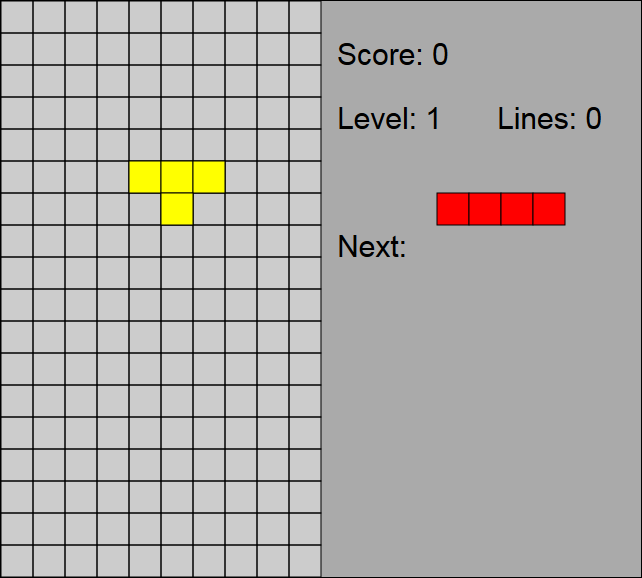

Be the one who arranges the blocks, as you play yet another port of a classic that has probably been ported to every platform that exists!
My first ever big project with SVG, it was an assignment for a web design class. Written in JavaScript in mostly one stretch of about 7 hours time.
The game was programmed primarily using Javascript, with some HTML and CSS, and SVG was used for the graphics.
